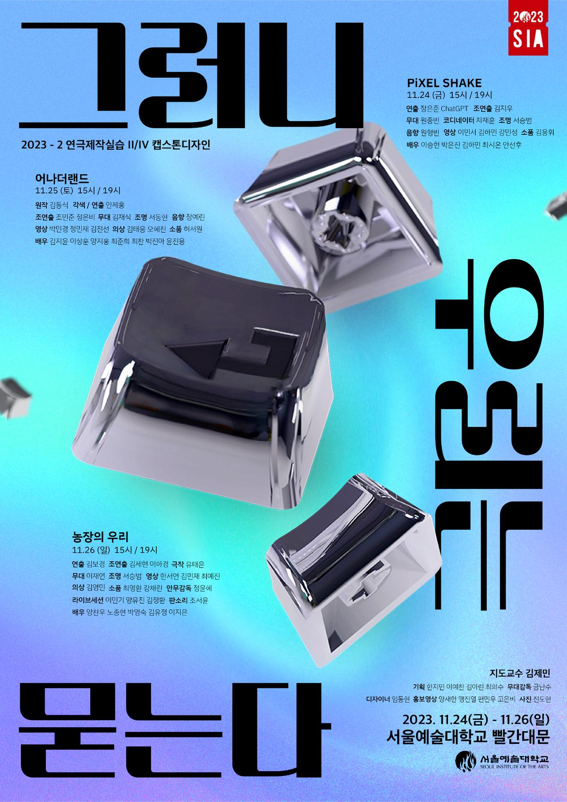

AI LAB · Seoul Institute of the Arts · 2023
A stage experiment translating abstract AI concepts into physical props, maps, and stage objects — supporting performer movement and storytelling.

Background & Objective
A stage experiment exploring how abstract AI concepts can be translated into physical props, maps, and stage objects that support performer movement and storytelling.
This production ran simultaneously with my work on the musical FAME, requiring me to coordinate my contributions remotely through rehearsal logs and advance preparation.
"Translating conceptual themes into tangible objects — ensuring each prop supported narrative clarity, performer interaction, and overall stage aesthetics."
Process
Prop Listing & Pre-Production
Before fabrication, I reviewed the script and identified all props referenced in the narrative — analysing each scene to understand performer actions, required objects, and transitions. These breakdowns ensured all physical elements aligned with the conceptual world of Anotherland.
Script breakdown and initial prop list
Concept Development — Sketching Anotherland
Created concept sketches inspired by the illustrated city-map aesthetic — exploring shape, rhythm, and spatial flow for the props used in the show.
Design reference sketches for the world of Anotherland
Prototype Fabrication
Using EVA foam, acrylic paint, and hand-finishing, I produced first-stage prototypes to test durability, scale, and visual clarity under stage lighting.
First fabrication tests
Remote Coordination via Rehearsal Logs
When overlapping productions prevented me from attending rehearsals, I checked uploaded rehearsal logs to confirm prop requests, blocking changes, and additional items needed for scenes.
Rehearsal log used for remote coordination
Final Prop Painting & Stage Setup
Completed final paintwork ensuring colours, textures, and finishes matched the overall visual language of Anotherland. Arranged props on the prop table, checked scene-by-scene placements, and confirmed visibility, accessibility, and performer interaction.
SET-UP Week
During the SET-UP week, I monitored how the props behaved on stage and checked for issues that appeared under live lighting conditions. Before the dress rehearsal, I refined the prop details and filled in any missing elements to match the director's notes. During technical rehearsals and cue-to-cue sessions, I confirmed placement, backstage transitions, and final adjustments with the performers and crew.
SET-UP schedule — prop checks, lighting conditions, and cue-to-cue coordination
Tech Rehearsal — Cue-to-Cue Adjustments
During cue-to-cue and technical rehearsals, refined prop positions based on actors' entrances/exits and lighting cues — making final adjustments to ensure smooth transitions.
Technical rehearsal adjustments
Result
Achievements & Reflections
Through this production, I developed stronger expertise in visual storytelling, spatial direction, and prop integration within a live performance environment — translating conceptual themes into tangible objects that supported narrative clarity and performer interaction.
Working across design, fabrication, and on-site coordination strengthened my ability to solve problems in real time, adapt to technical constraints, and collaborate effectively with directors, stage managers, and lighting teams — skills directly transferable to broadcasting and visual production environments.
This project expanded my capacity to balance creative vision with technical execution — a foundation that supports my growth as an Art Director and Production Designer.